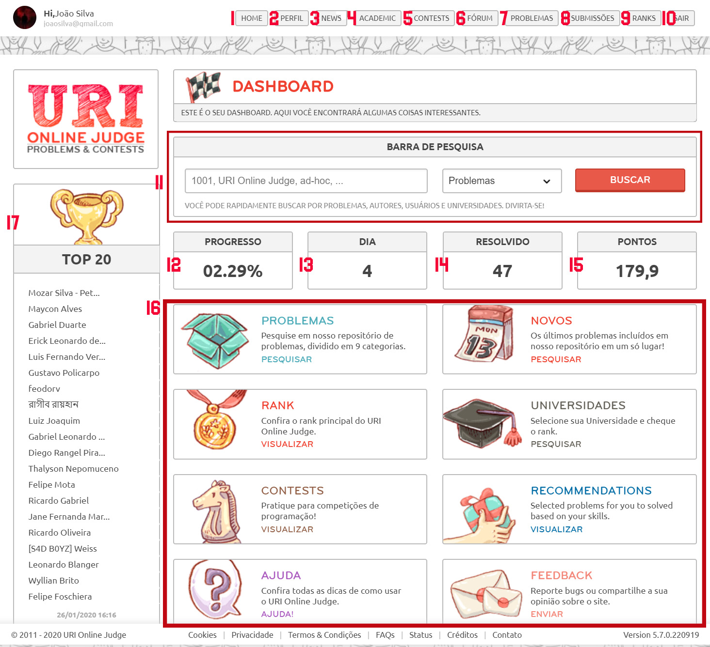

Endereço
Universidade Estadual de Santa Cruz. Campus Soane Nazaré de Andrade, Rod. Jorge Amado, Km 16 - Salobrinho, Ilhéus - BA.
Contato

Guia do URI para Iniciantes
Home / Guia do URI
O URI é uma plataforma online criada com o objetivo de proporcionar aos seus usuários o aprendizado, a prática e o aperfeiçoamento de suas habilidades em algoritmos através da resolução de problemas de programação diversos. O site possui mais de 1000 problemas de programação divididos em 8 grandes categorias. Essa divisão ajuda os usuários a se concentrarem em tópicos de programação específicos. Os problemas disponíveis na plataforma podem ser resolvidos com a utilização de 11 linguagens de programação diferentes.
O código-fonte feito pelo usuário para um determinado desafio é submetido a uma quantidade grande de testes que são realizados pela plataforma. O usuário pode ter seu código-resposta aceito ou não, fato que depende da aprovação dos resultados do algoritmo quando o mesmo é testado e comparado com os resultados esperados. Cada problema disponível no site possui uma pontuação correspondente, sendo esta definida pela dificuldade do problema e pela quantidade de pessoas que já conseguiram resolvê-lo. A pontuação do usuário (obtida através da resolução de tais problemas) define a sua posição no ranking, seja ele um ranking de todos os usuários, nacional ou da universidade em que estuda.
Para criar uma nova conta, basta acessar este link. Crie sua conta entrando com uma das opções indicadas (Facebook, Google, Github, etc.) ou preencha os dados solicitados, como demonstrado na imagem, pelo nosso usuário fictício ‘João Silva’, clicando, por fim, em ‘Entrar’.
Na tela inicial, você encontra todas as funções, assim como os links para as páginas que a plataforma URI dispõe. Tratando-se de um tutorial para iniciantes, aqui estão, detalhadamente, todas as funções / informações da plataforma URI disponíveis na tela inicial.
| 1 | 2 | 3 | 4 | 5 | 6 | 7 | 8 | 9 | 10 | 11 | 12 | 13 | 14 | 15 | 16 | 17 |
| Item | Descrição |
|---|---|
| 1 | Página inicial do URI. |
| 2 | Acesso às configurações, estatísticas, pontuação, amigos e convites que o usuário possui. |
| 3 | Atualizações sobre a plataforma, correção de erros encontrados e anúncio de eventos. |
| 4 | Plataforma que permite a interação direta entre professores e alunos, através da criação de turmas fechadas, seleção de problemas para que os alunos solucionem e mais. |
| 5 | Exibe as competições e torneios que estão ocorrendo, bem como suas instruções sobre a participação e também criação de times. |
| 6 | No fórum ocorre a interação entre os usuários, discussões sobre problemas, criação de tópicos e o tratamento de dúvidas. |
| 7 | Dispõe os problemas disponíveis na plataforma em categorias separadas. |
| 8 | Exibe os códigos enviados como resposta pelo usuário, bem como seu estado (se a resposta é válida ou não) e informações sobre tais uploads (data e hora de submissão, linguagem de programação utilizada, tempo de execução e código do problema). |
| 9 | Acesso aos rankings da plataforma. Há o ranking das universidades, países e também o ranking de todos os usuários do URI. |
| 10 | Deslogar a conta atual da plataforma. |
| 11 | Método de pesquisa da plataforma. É possível pesquisar pelo código de problema, pelas palavras-chave presentes no enunciado do mesmo, por nome de usuário, universidades e autores. |
| 12 | Exibe o percentual de resoluções feitas pelo usuário de todos os problemas que estão disponíveis no URI. |
| 13 | Número de dias decorridos desde a criação da conta. |
| 14 | Quantidade de problemas solucionados. |
| 15 | Pontos acumulados com a resolução dos problemas. |
| 16 | Links úteis que facilitam o acesso às diversas ferramentas. Cada ferramenta possui logo abaixo a sua descrição. |
| 17 | O Top 20 de todos os usuários do URI. |
Acessando URI / Categories, temos acesso aos problemas disponíveis na plataforma separados por categorias. No total, existem 9 categorias de problemas no site. Vejamos:
1
Iniciante
Conjunto dos problemas básicos de programação, destinados principalmente a quem está iniciando na programação. Geralmente exigem a compreensão de conceitos basilares da programação, como operações aritméticas com variáveis, por exemplo.
2
Ad-Hoc
Ad-Hoc significa basicamente, à grosso modo, algo que foi inventado em tempo real apenas para lidar com uma situação específica, em oposição a alguma abordagem sistemática para resolver problemas. Os problemas Ad-Hoc são, portanto, aqueles cuja solução não envolve estruturas de dados, algoritmos ou técnicas genéricas. Em geral, a estratégia utilizada para resolvê-los é muito específica.
3
Strings
Problemas que envolvem a manipulação de strings. Palíndromos e LCS são exemplos de conceitos presentes nos desafios desta categoria.
4
Estruturas e Bibliotecas
São os problemas que exigem a aplicação de estruturas de dados específicas (Fila e pilha, por exemplo) na implementação das soluções.
5
Matemática
Questões que envolvem a compreensão de conceitos matemáticos mais avançados e específicos.
6
Paradigmas
Nestes, ocorre a utilização de padrões de programação como Programação Dinâmica e Backtracking.
7
Matemática
Exigem a aplicação de conhecimentos sobre grafos, como Busca em Largura, Busca em Profundidade e árvores, por exemplo.
8
Geometria Computacional
Problemas avançados que exigem a compreensão e aplicação de conceitos de programação mais complexos, como pontos e linhas.
9
SQL
Linguagens de Consulta: Seleção, inserção, ordenação e atualização de dados e valores.
Este grupo, dirigido pela professora Marta Magda Dornelles, visa auxiliar o aluno no aprimoramento de suas habilidades em programação e seu raciocínio lógico-matemático, além de ampliar sua capacidade de reconhecer e aplicar conceitos matemáticos necessários para o desenvolvimento de algoritmos eficientes que solucionem os problemas computacionais propostos em sala. Este grupo, dirigido pela professora Marta Magda Dornelles, visa auxiliar o aluno no aprimoramento de suas habilidades em programação e seu raciocínio lógico-matemático, além de ampliar sua capacidade de reconhecer e aplicar conceitos matemáticos necessários para o desenvolvimento de algoritmos eficientes que solucionem os problemas computacionais propostos em sala.
Este grupo, dirigido pela professora Marta Magda Dornelles, visa auxiliar o aluno no aprimoramento de suas habilidades em programação e seu raciocínio lógico-matemático, além de ampliar sua capacidade de reconhecer e aplicar conceitos matemáticos necessários para o desenvolvimento de algoritmos eficientes que solucionem os problemas computacionais propostos em sala. Este grupo, dirigido pela professora Marta Magda Dornelles, visa auxiliar o aluno no aprimoramento de suas habilidades em programação e seu raciocínio lógico-matemático, além de ampliar sua capacidade de reconhecer e aplicar conceitos matemáticos necessários para o desenvolvimento de algoritmos eficientes que solucionem os problemas computacionais propostos em sala.
Este grupo, dirigido pela professora Marta Magda Dornelles, visa auxiliar o aluno no aprimoramento de suas habilidades em programação e seu raciocínio lógico-matemático, além de ampliar sua capacidade de reconhecer e aplicar conceitos matemáticos necessários para o desenvolvimento de algoritmos eficientes que solucionem os problemas computacionais propostos em sala. Este grupo, dirigido pela professora Marta Magda Dornelles, visa auxiliar o aluno no aprimoramento de suas habilidades em programação e seu raciocínio lógico-matemático, além de ampliar sua capacidade de reconhecer e aplicar conceitos matemáticos necessários para o desenvolvimento de algoritmos eficientes que solucionem os problemas computacionais propostos em sala.
Endereço
Universidade Estadual de Santa Cruz. Campus Soane Nazaré de Andrade, Rod. Jorge Amado, Km 16 - Salobrinho, Ilhéus - BA.
Contato
Endereço
Universidade Estadual de Santa Cruz. Campus Soane Nazaré de Andrade, Rod. Jorge Amado, Km 16 - Salobrinho, Ilhéus - BA.
Contato